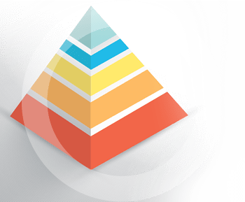

Öncelikle CRM sektörünün son yıllarda nasıl bir gelişme sürecinde olduğuna bakıldığında karşımıza iş dünyasının yaşadığı büyük değişim çıkmaktadır. Dünyada, neredeyse her sektörde rekabetin arttığı, ürünlerin pazara girme sürelerinin kısaldığı ve kâr paylarının düştüğü bir ortam olduğu aşikârdır. Bu yüzden, müşteriye daha etkili bir şekilde ulaşmak, müşterinin isteklerini anlayarak ürün ve hizmetleri bu yönde şekillendirmek her şirket için büyük bir önem taşımaktadır.
ONLINE CRM
Web tabanlı yazılımlar, firmanız için kurumsal ve profesyonel çalışmayı kolaylaştırır ve veriminizi gözle görülür bir şekilde artırır. Ayrıca, herhangi bir uyumluluk sorunu yaşamadığı için her işletim sisteminde hiçbir sıkıntı çıkarmadan rahatlıkla çalışır. Eski yazılımlar sadece belirlenmiş olan işletim sistemleri için tasarlanırdı. Örneğin, bazı yazılımlar sadece Windows’ta, bazıları ise sadece Mac ya da Linux’ta çalışırdı. Ama web tabanlı yazılımlar, bir web tarayıcısı ile bir internet bağlantısına ulaşabildiğiniz her işletim sisteminde, Mac, Windows, Linux vb. ayırt etmeden çalışır.
Günümüzde bilgisayarlarımızda yaşadığımız en büyük problemlerden biri de kapasite sorunudur. Web tabanlı yazılımlar, size bu sorunu da yaşatmaz çünkü bilgisayarınıza ekstra bir yük yüklemezler. Ayrıca herhangi bir güncellemeye ihtiyaç duyduklarında ekstra bir yazılıma ihtiyaç duymazlar.
Web tabanlı yazılımlar, otomatik olarak güncellendiği için sizin güncellemeleri manuel olarak indirip, kurmanız gerekmez ve bu da size büyük bir zaman kazandırır. Ayrıca bu özellik sizin her zaman, en güncel ve en yeni özellikleri kullanmanıza zemin hazırlar.
Eğer sıkça yedekleme yapan bir kurumsanız, web tabanlı yazılımlar tam size göre, çünkü web tabanlı yazılımlar yedeklerinizi birden fazla yerde tutarak, güvenliğinizi artırmaktadır. Siber saldırılara, virüslere karşı güvenlik denetimleri kontrol edilir ve otomatik olarak güncellenir. Bu sayede bilgileriniz, güvenli bir şekilde saklanmış olur.
Web tabanlı yazılımları kullanmak, zaman, kapasite, güvenlik ve güncellik gibi birçok açıdan size kazanç sağlar, günümüzde de birçok profesyonel kurum ve kuruluş bu tarz yazılımlar ile çalışmaktadırlar.

Aslında Adana CRM, çok da yeni bir kavram değildir CRM kısaltması ABD medyasında 1989 yılında sadece birkaç defa geçmesine karşın 2000 yılında bu rakam 14 bine ulaşmıştır. Hangi dönemde olursa olsun, geniş görüş sahibi yöneticilerin tümü, müşterileri anlamanın işlerini geliştirmek için ne kadar faydalı olduğunun bilincinde olmuştur.
Elli sektör üzerinde yapılan bir araştırmaya göre 1923 yılında sektöründe lider olan şirketlerin 43’ü bugün hala o sektörlerin liderleri. Ve bu şirketlere bakıldığında hepsinin müşteriyi anlamaya ciddi yatırımlar yapan ve müşteri odaklı çalışan şirketler oldukları görülmüştür
Bugün Adana CRM çözümleri olarak nitelendirilen uygulamalar ile geçmişteki uygulamalar arasında birçok yapısal benzerlik ve farklılıklar vardır. Aslında farklılıklar, CRM’in geçirdiği evreleri de ortaya koyması açısından önemlidir. Adana CRM’de yeni bir dönem başlamasına neden olan en temel gelişme, çözümlerin içerisinde yer alan analitik özelliklerin gerçek zamanlı ve çok daha kapsamlı hale gelmesi olmuştur. Bu özellikler çeşitlendikçe Adana CRM çözümleri de farklılaşmaya başladı. Bu anlamda günümüzde üç temel Adana CRM yapısından söz etmek mümkün:
Operasyonel CRM :
Adana CRM’in bu biçimi aslında alışılagelmiş iş fonksiyonlarının kapsandığı Adana CRM çözümlerinden oluşmaktadır. Bu fonksiyonlara örnek olarak müşteri hizmetleri, sipariş yönetimi, faturalama, satış ve pazarlama otomasyonu gibi süreçleri verebiliriz. Bu çözümler daha çok kurumsal sistem içerisindeki finans, insan kaynakları gibi farklı iş fonksiyonlarının bütünleşmiş bir yapıya kavuşturulması için kullanılır.
Analitik CRM :
Adından da anlaşılacağı gibi bu Adana CRM biçiminde kullanıcılara ait verilerin elde edilmesi, depolanması, işlenmesi, analiz ve tahminlere dönüştürülerek raporlanması işlemleri gerçekleştirilir. Böylelikle Adana CRM’in operasyonel ve uyum özellikleri üzerine analiz ve raporlama özellikleri eklenir. Değişim ve yenilikler müşterilerin elde edilen veriler kullanılarak yapılır.
İşbirliğine yönelik CRM :
Bu Adana CRM biçimi aslında diğerlerinin en uygun birleşiminden oluşmaktadır. Müşteriler ile şirketler arasında tam anlamıyla bir etkileşim ve koordinasyon ağının oluşmasına imkân veren bu işbirliğine yönelik Adana CRM, web sitesi, telefon, e-mail gibi farklı iletişim kanallarından gelen bilgilerin değere dönüştürülmesini sağlamakta ve belirli raporları periyodik olarak hazırlamaktadır. İşbirliğine Yönelik Adana CRM çözümleri müşteri ile etkileşime imkân veren tüm fonksiyonları içermekte ve bugün tercih edilen bir Adana CRM sistemi olarak karşımıza çıkmaktadır.
Neden Web Tabanlı Adana CRM ?
Günümüzde kullanılan yazılım çözümlerinin çoğu web tabanlı yazılım alternatiflerini üretmek için kendini geliştirmektedir. İnternet devi Google’ın, belgelerin elektronik tablolar halinde internet ortamına taşınmasını ve geliştirilmesini sağlayan çözümler, bir diğer yandan Microsoft’un ofis araçlarının internet ortamında kullanımı için yeni teknolojiler geliştirilmesi bunlara örnek olarak gösterilebilir.
Yazılım çözümlerinin web tabanlı olarak tercih edilmesinin sebebi dünyanın her tarafında oldukça ucuz olan internet ağı üzerinden bilgilere ulaşabilmenin getirdiği kolaylıklardan kaynaklanmaktadır. Teknolojinin gelişmesiyle birlikte pazarlama stratejilerinin de büyük bir değişime uğraması, şirketlerin uluslararası pazarlara açılmasını kaçınılmaz hale getirmiştir.
Bununla birlikte internet kullanımının yaygınlaşması ve veriye herhangi bir yerden ulaşma kolaylığı yazılım çözümlerinin internet ortamında kullanılabilir hale gelmesini gerektirmiştir. Siz de müşterilerinize ve onların sizin için çok önemli olan fikirlerine CRM yöntemiyle erişebilirsiniz. Üstelik Adana web tabanlı CRM, internet bağlantısının olduğu her yerden kullanabileceğiniz bir hizmettir.
Peki, Adana CRM ile çalışanlarınız ve müşterileriniz hakkında neler öğrenebilirsiniz? Birkaç örnek vermek gerekirse, hangi tarihte hangi personelinizin hangi müşteriler ile görüştüğünü, olumlu veya olumsuz dönüşlerin kaç tane olduğunu, size gelen tekliflerin sayısını ve ayrıca size gelen siparişlerin sayısını Adana CRM yöntemi ile oturduğunuz yerden, sadece internete ihtiyaç duyarak öğrenebilirsiniz.
Ayrıca, sektöre gelen yeni firmaları, personellerinizin işlerinde olan başarılarını, personellerinizin çalışma ve terfi bilgilerini öğrenebilir, şirketinizin mali olarak denetlenmesinde ise hangi tarihte kim tarafından ne kadar ödeme yapıldığını, gelir – gider tablolarını öğrenebilirsiniz.
Adana CRM ile tüm bu işlemleri tek bir ekrandan görebilmek imkânına sahip olup şirketiniz üzerinde tam bir hâkimiyet kurarak, müşterilerinize daha iyi hizmet verme şansına sahip olursunuz. Piyasanın tüm devleri Adana CRM hizmetlerine milyon dolarlarla yatırım yapmakta ve bu yatırımlara çok önem vermektedir. Adana CRM hizmetlerine dünya çapında yapılan yatırımlar gün geçtikçe artmakta ve küçük, orta, büyük fark etmeksizin tüm şirketler Adana CRM faaliyetleri yürütmek için bütçe ayırmaya özen göstermektedirler. Eğer siz de sektörde tutunmak, şirketinizin ve müşterilerinizin nabzını iyi tutmak istiyorsanız Adana CRM yatırımları hakkında bilgi sahibi olmanız ve size uygun Adana CRM yöntemini şirketinize uygulamanız gerekmektedir.
CRM’den Verim Almanın Yolları
Orijinal ismi ile “Customer Relationship Management” (CRM) müşteri ilişkileri yönetimi anlamına gelmektedir. Adana CRM uygulamalarının çözümleri uzun yıllardır iş hayatımızın bir parçasıdır. Adana CRM sistemlerinin işletmelerin operasyonlarında ve kârlılığının artışında büyük rol oynadığı da artık bilinen bir gerçektir. Ancak, çok az sayıda firma müşteri ilişkileri yönetim sisteminin potansiyelini kullanabiliyor, çoğu firmada büyük beklentilerle hayata geçirilen sistemler, hayal kırıklığı ile sonuçlanıyor.
Peki, oldukça yüksek yatırımlarla ve iş yükü ile kurulan uygulamadan fayda sağlamanın yolları nelerdir ?
İşte size Adana CRM’de başarıyı sağlayacak üç temel kural:
Basit Olun !
Bazı firmaların tüm imkânlardan yararlanmak amacı ile Adana CRM sistemlerine eklenebilecek tüm eklentileri çok kısa bir süre içinde eklediklerini ancak bu teknolojilerin beklenilen sonuçları beraberinde getirmediğini görüyoruz. Basit olmak en iyisidir. Müşteri için her zaman daha az menü, daha az tablo, daha az fonksiyon ile Adana CRM uygulamanız tercih sebebidir. Çünkü kullanıcılar, veriyi kolayca girebilmeli ve bilgiye hızla erişebilmelidir.
Odaklanın !
Çalıştırdığınız satış temsilcilerinin odaklanmaya ihtiyaçları vardır ve satış müdürleri bunu sağlama konusunda her zaman başarılı olamamaktadırlar. Satış temsilcilerine, her şeyin çok önemli olduğu söylenmeli ve sistemi kurgularken gerçekten neyin önemli olduğuna karar verilmelidir. Menüler, alanlar, fonksiyonlar buna bağlı kalınarak oluşturulmalı Adana CRM’nin var oluş nedeninin, satış çalışanlarını üretken kılmak olduğu, iyi bir eğitim ile satış temsilcilerine aktarılmalıdır. Çünkü sizin için bu hedeften uzaklaşmak sadece vakit ve para kaybı demektir.
Unutmayın, CRM Satış Temsilcilerinin İşidir !
Dürüst olmak gerekirse, Adana CRM sistemleri bugüne kadar yöneticiler için muhteşem raporlama makineleri olarak konumlandırıldı. Dolayısıyla, satış ve pazarlama otomasyon uygulamalarının, yönetim raporları oluşturmak konusunda çok etkin olduğu söylenebilir. Ancak, bu Adana CRM’in en iyi kullanım şekli değildir.
“Müşteri İlişkileri Yönetimi” sistemi, satış çalışanlarına işlerini kolayca yapabilmeleri için sağlanması gereken bir araç olarak karşımıza çıkar. Adana CRM sistemi şirkete uygulanırken, sorulması gereken sorular şunlar olmalıdır:
“ Nasıl daha fazla satış yapabilirim ? ”
“ Alıcı ve satıcı arasındaki ilişkileri nasıl geliştirebilirim ? ”
Bu soruya tatmin edici bir cevap verildiğinde, kullanıcı ile karşılıklı uyum, Adana CRM’nin değerinin algılanması ve satış aktivitelerinin takibi verimli bir şekilde uygulanmış olacaktır.